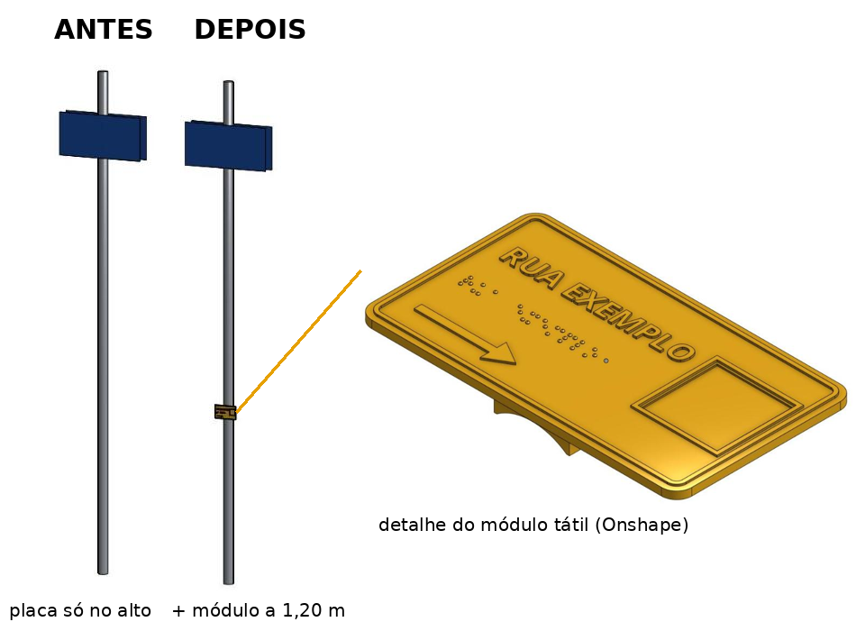
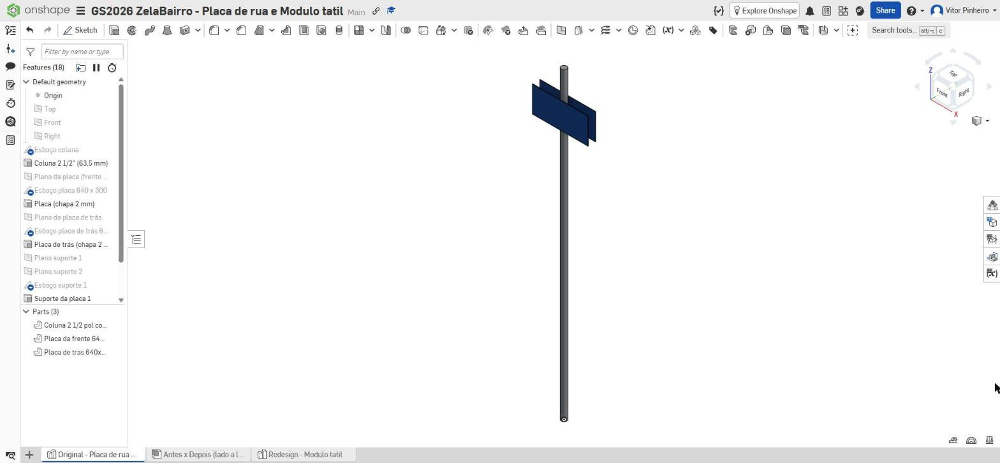
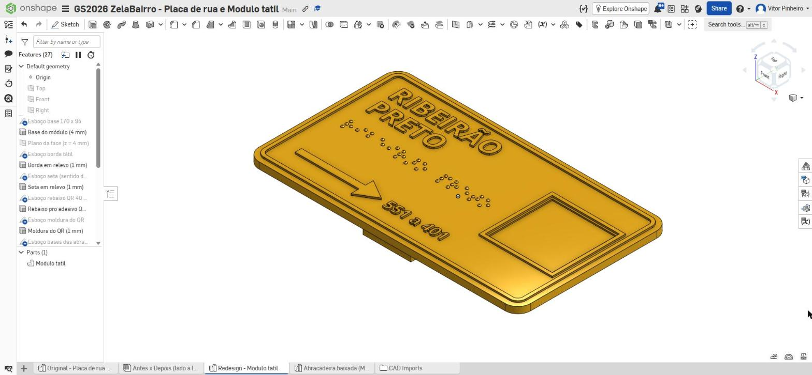
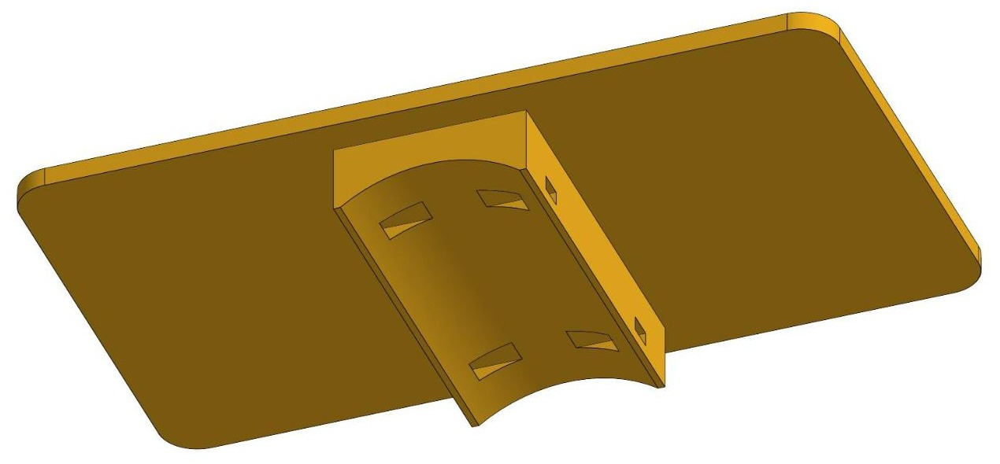
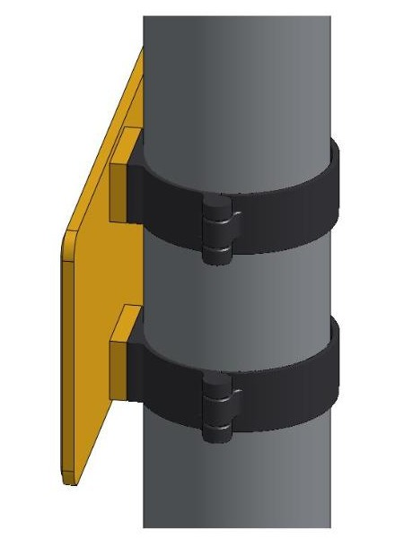

O problema
A placa de nome de rua fica no alto (a que a gente mediu, na Al. Ribeirão Preto x R. Pamplona, tem 68 x 30 cm e está a 3,12 m do chão) e só tem informação visual. Quem é cego ou tem baixa visão não consegue saber em que rua está, e quando a placa está apagada ou torta não tem um jeito simples de avisar alguém.
A proposta
Um módulo de 170 x 95 mm preso na mesma coluna, na altura da mão (1,20 m). A placa original continua no lugar.
- nome da rua em relevo e em braille
- seta em relevo com o sentido da numeração
- espaço pra adesivo de QR code que abre o registro de ocorrência no ZelaBairro
- preso na coluna de 63,5 mm com duas abraçadeiras, sem furar a coluna
Antes e depois

Modelos no Onshape

Original: coluna com as placas

Redesign: módulo tátil

Parte de trás: bases onde as abraçadeiras são parafusadas.

Módulo montado na coluna com as duas abraçadeiras.
Arquivos
- Módulo tátil (STEP e STL)
- Abraçadeira baixada, ajustada pra 63 mm (STL)
- Original: coluna e placas (STEP e STL)
- Repositório completo
- Vídeo do projeto (1min36, YouTube)
Peça baixada e creditada: BRACE PVC PIPE CLAMPS with hinge, de Mihai B Mike (CC BY-NC-SA).
ODS
ODS 11 - Cidades e Comunidades Sustentáveis · ODS 10 - Redução das Desigualdades
Integrantes
Gabriel Leão da Silva (RM552642) · Matheus Farias (RM554254) · Miguel Mauricio Parrado Patarroyo (RM554007) · Pedro Chaves (RM553988) · Vitor Pinheiro Nascimento (RM553693)